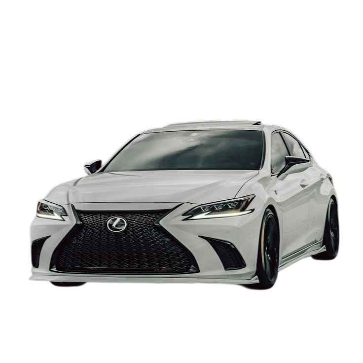
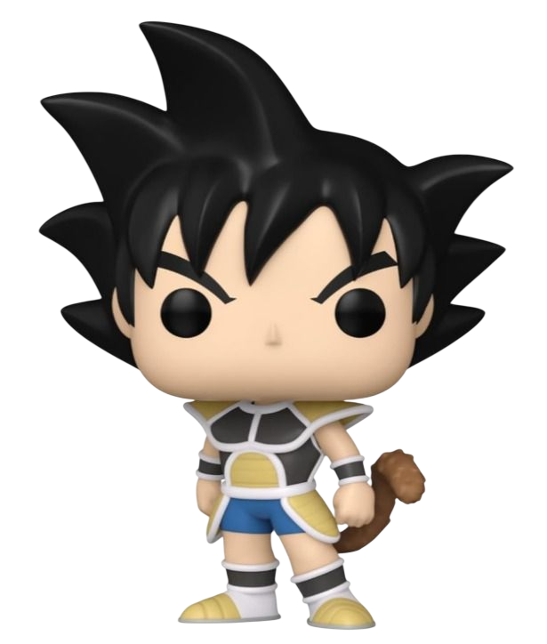
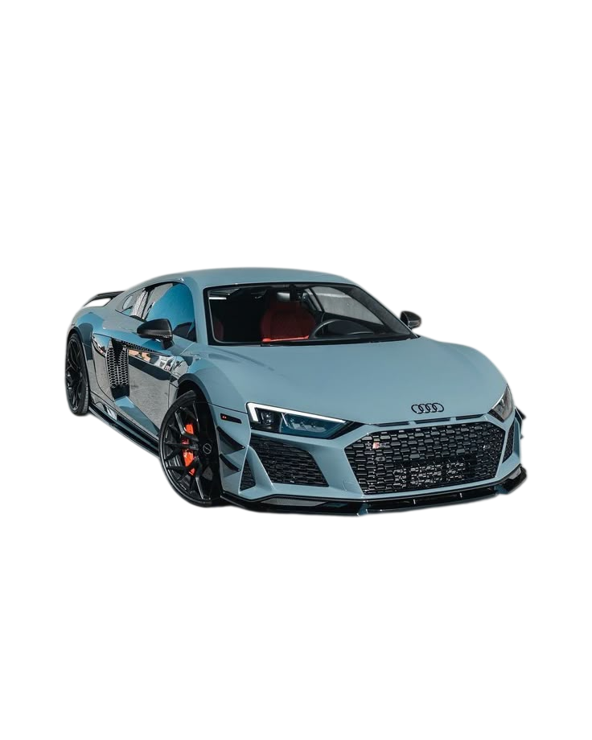
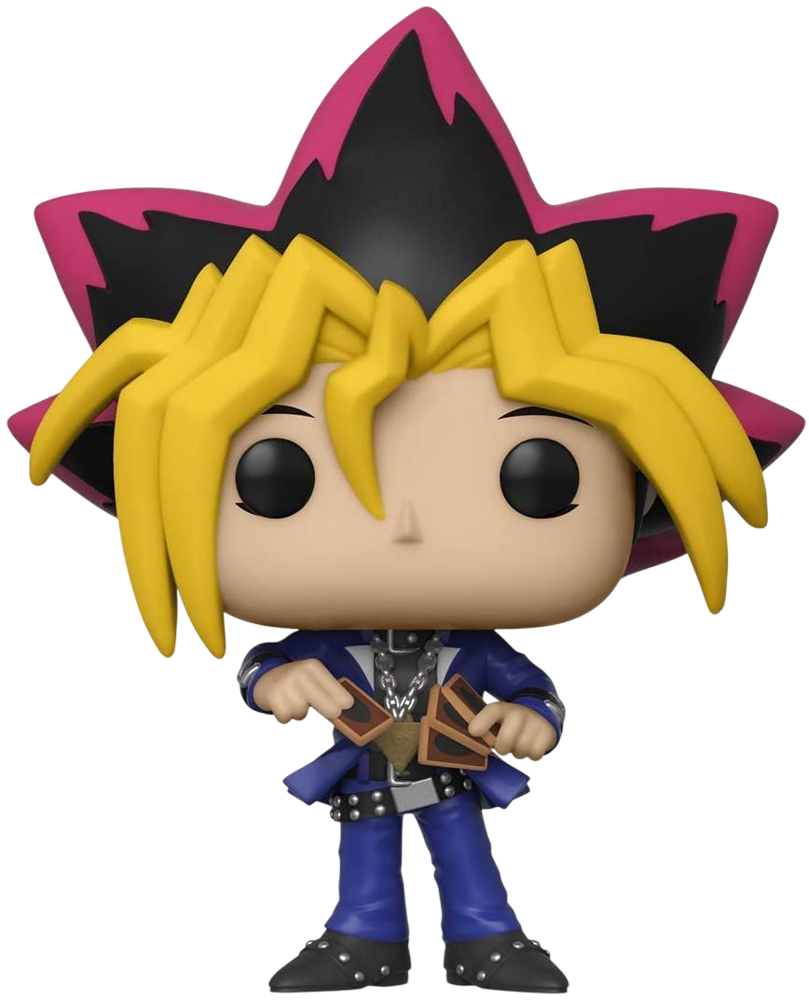
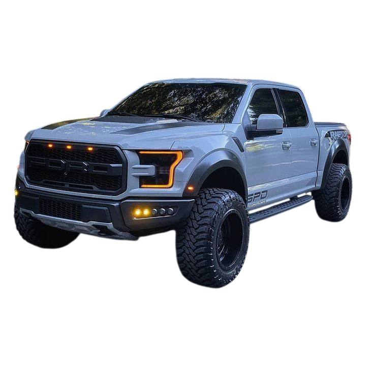
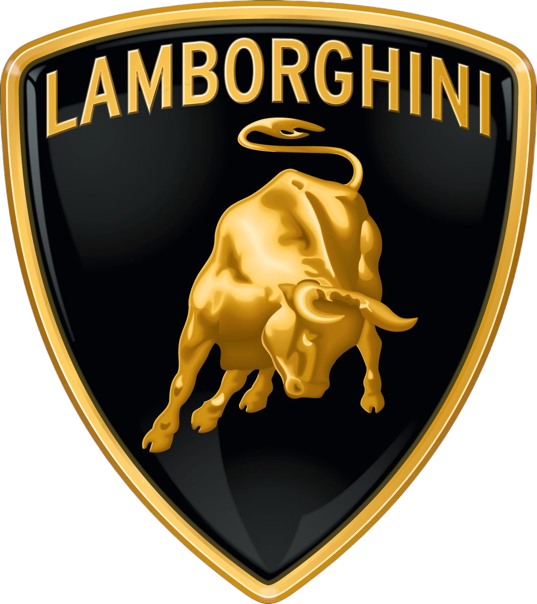
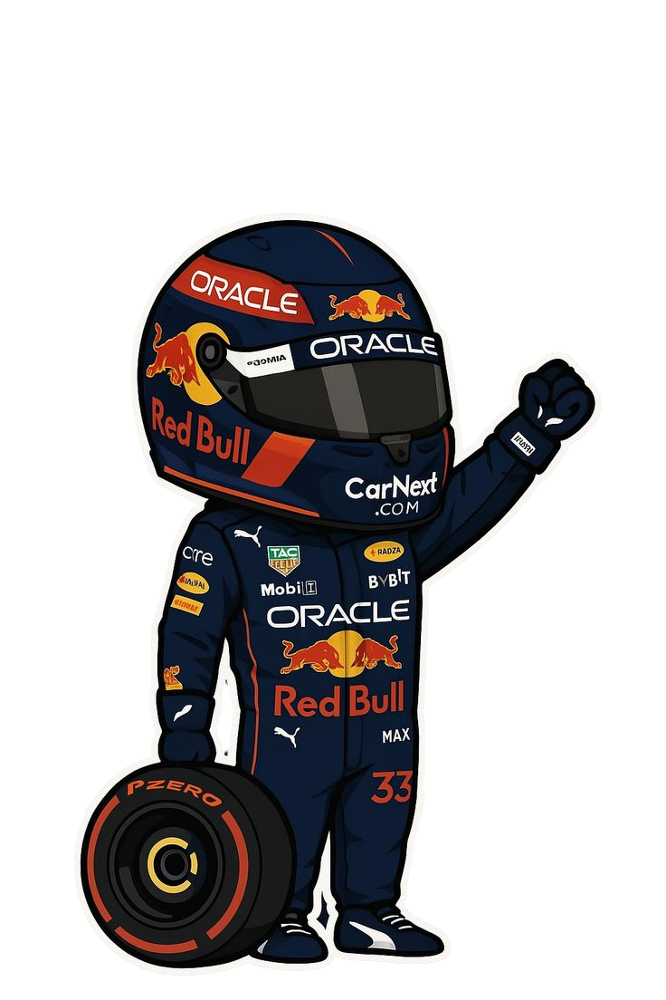
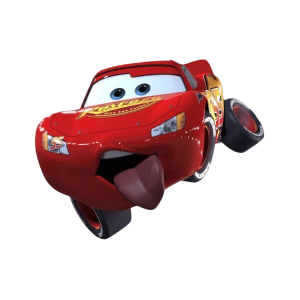
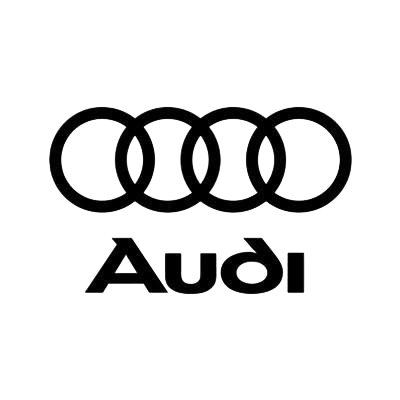

CARROS Y JUGUETES

La presencia que provoca cada diseño y linea de carros en especial si el carro tiene modificaciones en su interior o exterior.
La experiencia de tener juguetes de coleccion, en especial si los juguetes tienen linea exclusiva.
Por que sentarse al volante y tener el control de 4 ruedas es una sensación increible, y saber que hay muchos carros con diseños unicos y exclusivos supongo la sensación al volante es unica.
Por que me apasiona coleccionar juguetes de caricaturas que veo o vi alguna vez, incluso coleccionar carros de juguetes, lineas de jugues que tienen pocas unidades y quisiera conseguir.

No le dedico mucho tiempo a ninguno de los dos, la verdad a los juguetes me gusta tenerlos ordenados y exividos no jugarlos tanto pero una vez a la semana me tomo de 1-2 horas para limpiar su estanteria y limpiar los juguetes. Ahora a los carros 1 hora al dia no salgo mucho pero salgo y manejo un rato para matar el aburrimiento, los fines de semana no agarro el carro.

Los HotWheels son mi coleccion favorita de juguetes hay mucha variedad, ahora mismo tenga una coleccion no muy grande pero lo suficientemente amplia para disfrutar de mis juguetes igual cuento con una pqueña coleccion de funkos me gustan mucho.
El audi R8 el mi carro favorito tiene presencia, su cara es agresvia y desde que se dejaron de fabricar se ha vuelto un carro muy buscado, todos los colores le quedan bien poreso es mi favorito.
